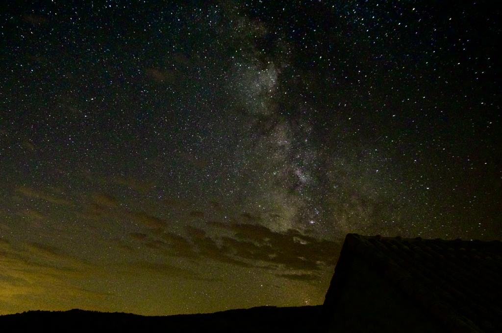
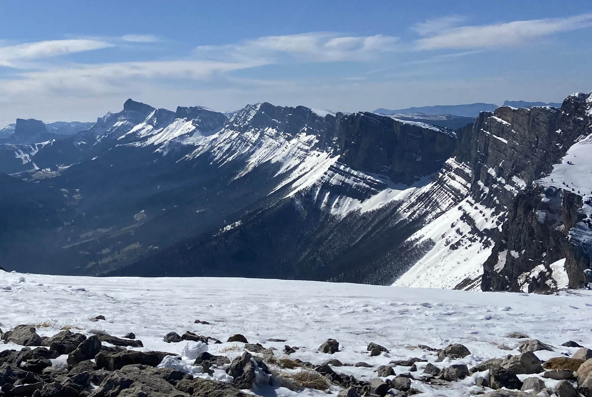
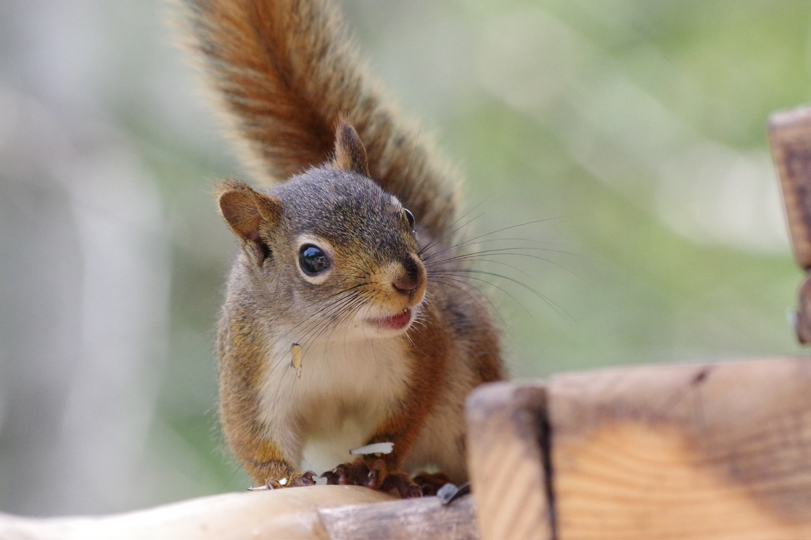
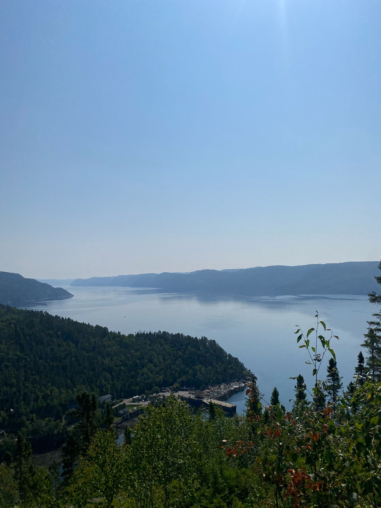

Qui suis-je ?
Né en 2006, dans le sud de la France, je suis étudiant en développement informatique. Dans mon temps libre, je réalise des projets plus ou moins gros comme mon explorateur de fractale.
Je suis également photographe amateur et plus particulièrement en astro-photo. Je fais également du ski depuis tout petit dans le Vercors.
Je passe la plupart de mon temps libre devant des vidéos de vulgarisation diverses, que ce soit en informatique, en astronomie ou même en droit. Ou alors à écouter de la musique.
Métier prédestiné
Dans le futur je souhaiterais devenir developpeur, fullstack ou bien frontend. J'aime beaucoup discuter avec les utilisateurs, comprendre leurs besoins et developper un outil qui y répond au mieux. C'est pour cela que je préfère developper la partie front-end d'une application mais j'apprécie aussi le developpement d'algorythme.


2024 - Aujourd’hui : IUT
Étudiant à l'IUT 2 de Grenoble en informatique, j'y apprend notamment le Java, C et C++, le développement web (HTML, CSS, JavaScript et PHP), la modélisation UML, la réalisation d'interfaces accessible répondantes à de vrai besoins, le SQL et plus particulièrement le PostgreSQL et d'autres technologies.
2021 - 2024 : Lycée
Lycéen au lycée Louis Pasteur d'Avignon en spécialité NSI, maths (maths expertes) et physique en première. J'ai pu, en NSI, participer à des concours divers, pour l'entreprise Numworks, la nuit du code et 2 concours du forum Ti-planet. J'ai pu obtenir mon bac mention assez bien à rien de la mention bien
